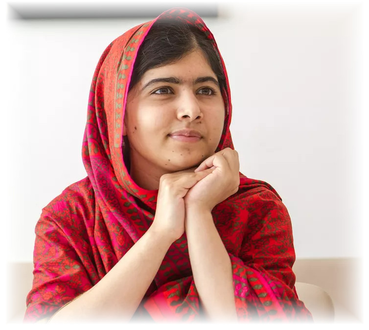
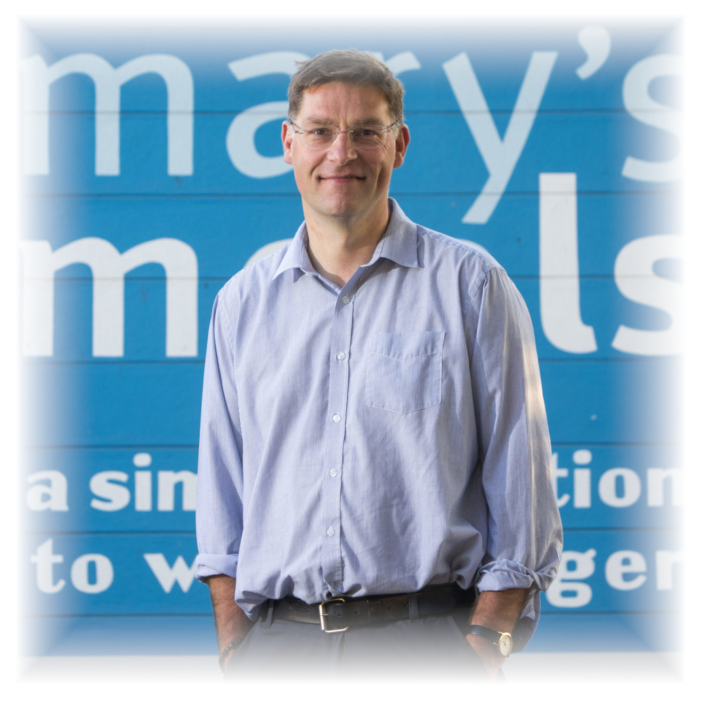
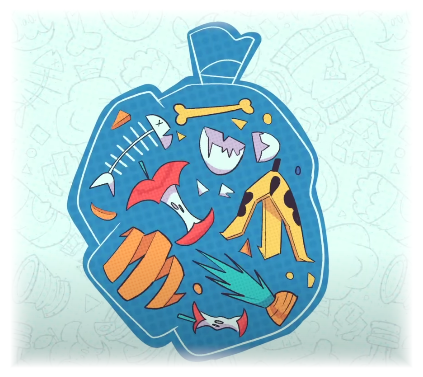
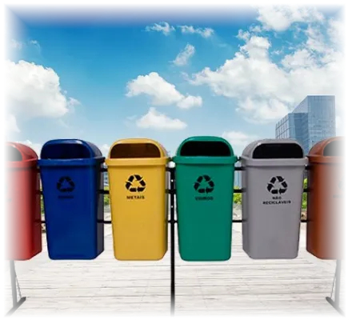

No turbilhão do mundo atual, onde notícias de crises, conflitos e desastres naturais dominam as manchetes, é fácil perder a esperança em um futuro melhor. No entanto, em meio a essa realidade desafiadora, há uma crescente onda de indivíduos, organizações e empresas que estão se destacando como agentes de mudança. Suas ações audaciosas e inovadoras estão criando um impacto significativo em nossas vidas e no mundo como um todo.
O World Changes News tem o prazer de apresentar uma série especial sobre "Ações que Transformam o Mundo". Nesta série, vamos explorar e celebrar os esforços e iniciativas que estão moldando positivamente o futuro da humanidade e do nosso planeta.
De comunidades rurais a metrópoles urbanas, pessoas em todo o mundo estão enfrentando desafios prementes, sejam eles sociais, ambientais ou econômicos, e estão buscando soluções criativas. Essas histórias inspiradoras vão muito além do convencional, desafiando normas estabelecidas e abrindo caminhos para um amanhã mais promissor.
Ao longo desta série, destacaremos projetos pioneiros que visam combater a pobreza, promover a igualdade de gênero, proteger o meio ambiente, melhorar a saúde e a educação, e muito mais. Veremos como indivíduos corajosos estão empoderando suas comunidades, como empresas estão adotando práticas sustentáveis e como tecnologias inovadoras estão revolucionando setores inteiros.
Nossa intenção é oferecer uma visão panorâmica de como essas ações estão acontecendo em diferentes partes do globo, conectando pessoas e compartilhando histórias de sucesso que merecem ser conhecidas. Queremos inspirar nossos leitores a se engajarem em suas próprias comunidades, incentivando-os a contribuir para um mundo melhor, pois acreditamos que cada ação, por menor que seja, pode fazer a diferença.
A série "Ações que Transformam o Mundo" é um convite para enxergarmos além das adversidades, encontrando inspiração em soluções concretas e movimentos positivos. Juntos, podemos construir um futuro mais justo, sustentável e equitativo para as gerações vindouras.

Além de receber inúmeras honrarias e reconhecimentos, Malala fundou a Fundação Malala, uma organização que defende a educação de qualidade para todas as crianças ao redor do mundo, independentemente de gênero, etnia ou origem social. Ela continua sendo uma voz poderosa e inspiradora na luta pela igualdade de gênero, educação universal e direitos humanos. Conheça Malala Yousafzai!

A Mary's Meals, fundada por MacFarlane-Barrow em 2002, tem como objetivo combater a fome e a falta de educação em algumas das áreas mais empobrecidas do mundo. A organização fornece refeições diárias em escolas e centros de aprendizagem, incentivando assim que as crianças frequentem a escola e tenham a oportunidade de receber uma educação básica. A abordagem da Mary's Meals não apenas nutre os corpos das crianças, mas também alimenta suas mentes, capacitando-as a construir um futuro melhor para si e suas comunidades. Conheça Magnus MacFarlane-Barrow!

Uma ação que pode mudar o mundo também pode ser pequena! Assim como nos mostra o canal do Youtube Varanda Orgânica que ensinou a fazer uma composteira com garrafa pet! Assista agora ao vídeo clicando aqui!

Ações que mudam o mundo, também pode ser o compartilhamento de informações educativas sobre como podemos cuidar melhor do nosso planeta! E o canal do Youtube Nostalgia fez um vídeo super lúdico e educativo, sobre o que acontece com o nosso lixo após o descarte! Assista agora!

No contexto atual de crescente preocupação com as mudanças climáticas, poluição e escassez de recursos naturais, a separação correta do lixo emerge como uma ação fundamental e acessível para contribuir com a preservação do meio ambiente e a sustentabilidade do nosso planeta. Além de ser um dever cívico, a separação adequada do lixo traz benefícios significativos que vão desde a redução da poluição até a promoção de uma economia circular mais eficiente! Por isso a WC NEWS trás com exclusividade a forma correta de separar o lixo! Para acessar clique aqui!